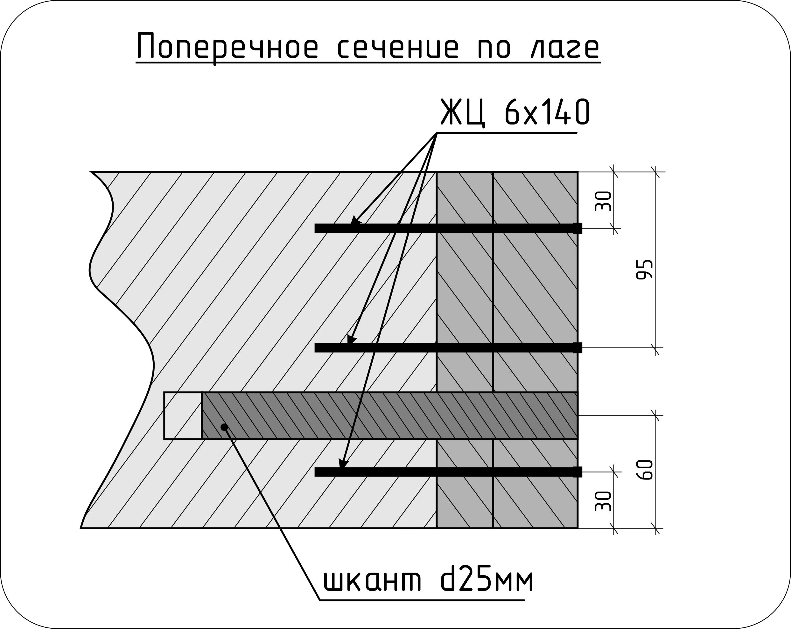
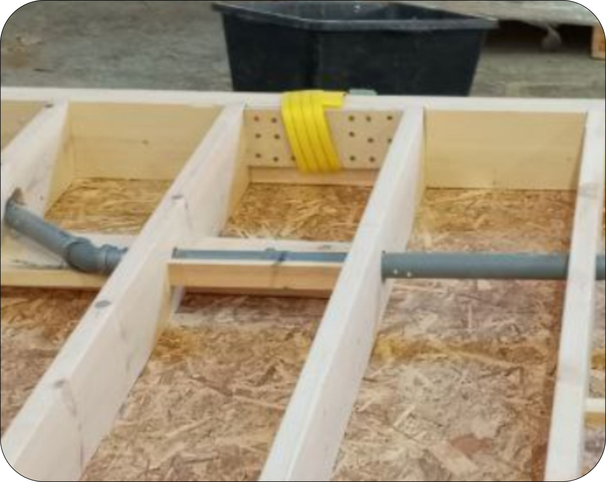
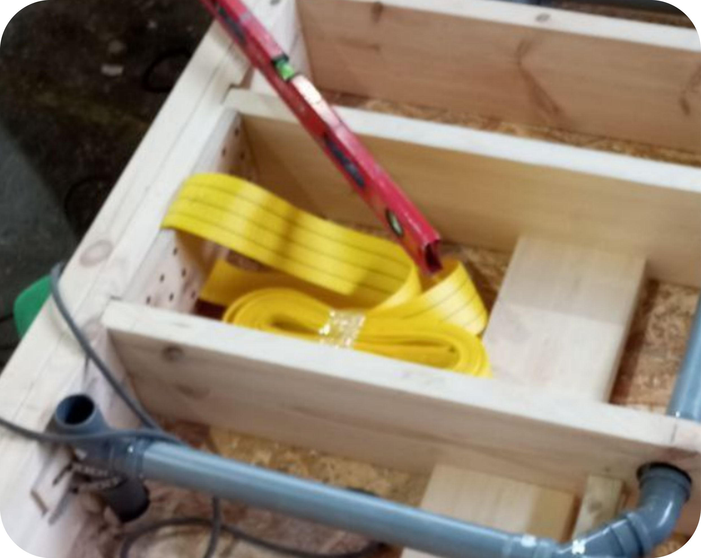
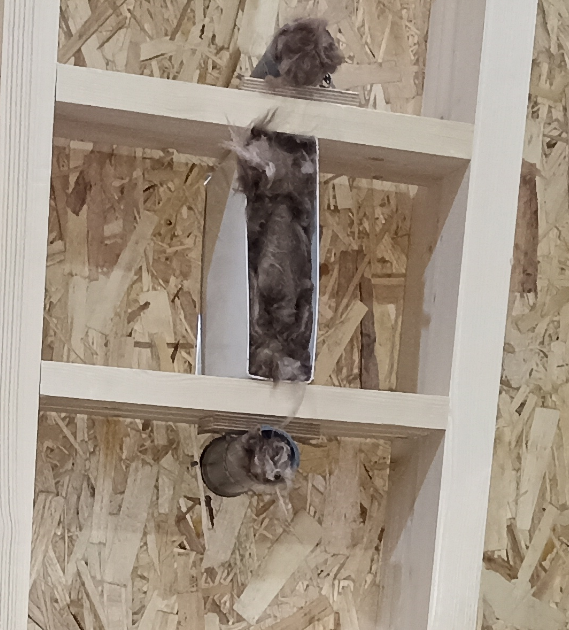

5.2.1 Сборка панели пола
-
5.2.1.1. Сборка каркаса панели
Необходимая документация для выполнения работ: Раздел КС.ПП. Альбом сборки типовых узлов каркаса.
Производимые операции:
-
Просверлить в балках по 3 отверстия на каждый стык с лагой.
Привязка по высоте балки: 30мм - 95мм - 160мм.
Собрать сдвоенные балки согласно чертежа. Между собой балки склеивать на ПВА-М и стянуть
саморезами ЖЦ 6х80 в шахматном порядке с шагом 600мм.
Собрать каркас, выравнивая балки и лаги по верхней плоскости. Крепить балку на 3 самореза ЖЦ 6х140 в каждый торец лаги. - Усилить лаги шкантами 25мм длиной 150мм. Сделать отверстия диаметром 25мм и глубиной 170мм низкооборотистой дрелью. Погрузить шкант на 50мм в клей ПВА-М и вставить в просверленное отверстие. Забить шкант киянкой.
- Установить торцевые лаги. Торцевые сдвоенные лаги дополнительно склеить ПВА-М и стянуть саморезами ЖЦ 6х80 в шахматном порядке с шагом 300мм.
- Разметить пложение закладных перемычек. Засверлить в перемычках отверстия под саморезы. Сверлить в боковых гранях под углом к торцевым. Закрепить закладные на каркасе саморезами ЖЦ 6х120.
- Произвести монтаж строп. Установить фанеру внутрь кольца стропы, выровнять по нижней стороне каркаса и закрепить к каркасу панели пола на участке согласно чертежа. Крепить на саморезы ЖЦ 6х80, по 18 штук на каждое крепление стропы.
Фото установленных строп в перевернутых панелях, подготовленных к нанесению ППУ-утеплителя.
 
Контрольные параметры:
- Внешние габариты панели. Допуск: +-2мм.
- Отклонения от верхней плоскости панели. Допуск: 0 -2мм.
- Диагонали панели. Допуск +-3мм.
- Наличие строп. Положение строп соответствует проектному.
- Стропы выровнены по нижней стороне каркаса.
- Количество саморезов в узлах крепления: соответствует требованиям конструкционного узла.
По факту контрольных замеров ставится отметка в паспорте ОТК.
Необходимый инструмент и оборудование:
- Аккумуляторный шуруповерт с зажимным патроном.
- Аккумуляторный шуруповерт ударный.
- Рычаг для выгибания досок.
- Киянка.
- Рулетка 10м.
- Уголок плотницкий металлический.
- Карандаш простой.
- Сверло d6х100мм.
- Бита PZ3.
- Кисть 100мм.
Расходные материалы:
- Саморез ЖЦ 6х140.
- Саморез ЖЦ 6х120.
- Клей ПВА-М.
5.2.1.1. Сборка каркаса панели. Ссылка на фотографии производства работ:

-
Просверлить в балках по 3 отверстия на каждый стык с лагой.
Привязка по высоте балки: 30мм - 95мм - 160мм.
Собрать сдвоенные балки согласно чертежа. Между собой балки склеивать на ПВА-М и стянуть
саморезами ЖЦ 6х80 в шахматном порядке с шагом 600мм.
-
5.2.1.2. Укладка ОСБ на каркас панели
Необходимая документация для выполнения работ: Раздел КС.ПП.
Производимые операции:
- Сверить количество и габариты полученных заготовок ОСБ с чертежом. Произвести контрольные замеры геометрии каркаса панели. Спланировать порядок укладки заготовок на каркас.
-
Нанести клей ПВА-М на участок каркаса, укрываемый листом ОСБ.
Уложить ОСБ, выровнять по каркасу, закрепить кровельными гвоздями 45мм с шагом 350-400мм к каркасу панели.
Крепить от одного края к противоположному, чтобы лист заготовки равномерно разглаживался по длине и не давал коробления-прогиба по центру. - Повторить предыдущую операцию для каждой заготовки ОСБ.
- Проверить панель на наличие выступающих шляпок гвоздей. Если такие найдутся, то забить гвоздь до конца.
Контрольные параметры:
- Совпадение с проектными отступами. Допуск: 0 -2мм.
- Отклонения от верхней плоскости панели. Допуск: 0 -2мм.
- Отсутствие выступающих не забитых шляпок гвоздей.
- Отсутствуют перепады на стыках листов.
По факту контрольных замеров ставится отметка в паспорте ОТК.
Необходимый инструмент и оборудование:
- Гвоздезабивной пистолет.
- Молоток.
- Рулетка 7,5м.
- Уголок плотницкий металлический.
- Карандаш простой.
- Кисть 50мм.
Расходные материалы:
- Гвоздь барабанный с кольцевой накаткой CRN 31/45 BKRI cnk.
- Клей ПВА-М.
- Ветошь.
5.2.1.2. Укладка ОСБ на каркас панели. Ссылка на фотографии производства работ:
-
5.2.1.3. Укладка фанеры на каркас панели
Необходимая документация для выполнения работ: Раздел КС.ПП.
Производимые операции:
ГВОЗДИ использовать запрещено!
- Сверить количество и габариты полученных заготовок фанеры с чертежом. Произвести контрольные замеры геометрии каркаса панели. Спланировать порядок укладки заготовок на каркас.
- Просверлить в фанере отверстия под саморезы по периметру с шагом 300мм и по параллельным линиям с межосевым расстоянием 600мм параллельно короткой стороне заготовки. Обработать отверстия зенкером.
-
Нанести клей ПВА-М на участок панели, укрываемый заготовкой фанеры.
Уложить фанеру, выровнять по каркасу, закрепить саморезами ЖЦ 5х60 в подготовленные отверстия.
Крепить от одного края к противоположному, чтобы лист заготовки равномерно разглаживался по длине и не давал коробления-прогиба по центру.
Закручивание производить с отрегулированным моментом на шуруповерте, чтобы шляпки саморезов не выступали за пределы фанеры и не были утопленными глубже 2мм. - Повторить предыдущую операцию для каждой заготовки из фанеры.
- Проверить панель на наличие выступающих шляпок саморезов. Если такие найдутся, докрутить.
Контрольные параметры:
- Совпадение с проектными отступами. Допуск: 0 -2мм.
- Отклонения от верхней плоскости панели. Допуск: 0 -2мм.
- Отсутствие выступающих шляпок саморезов.
- Отсутствуют перепады на стыках листов.
По факту контрольных замеров ставится отметка в паспорте ОТК.
Необходимый инструмент и оборудование:
- Аккумуляторный шуруповерт с зажимным патроном.
- Рулетка 7,5м.
- Уголок плотницкий металлический.
- Карандаш простой.
- Сверло d4х50мм.
- Сверло зенковочное.
- Бита PZ3.
- Кисть 100мм.
Расходные материалы:
- Саморез ЖЦ 5х60.
- Клей ПВА-М.
- Ветошь.
5.2.1.3. Укладка фанеры на каркас панели. Ссылка на фотографии производства работ:
-
5.2.1.4. Прокладка трассы канализации
Необходимая документация для выполнения работ: КС.ПП, КР.М, ИР.К
Производимые операции:
- Разметить отверстия для инженерной части. Сделать необходимые отверстия в листовом материале панели.
- Собрать и разложить трассу канализации согласно листа ИР.К (инженерные решения, канализация) поверх каркаса. Трубы канализации собирать только с использованием сантехнической смазки. На "сухую" сборка запрещается, т.к. приводит к повреждению уплотнительных колец. На концах обрезанных труб снять фаски.
- Отметить места в каркасе, в которых необходимо сделать отверстия под трассу. Высверлить коронкой по дереву отверстия. Разместить трассу в каркасе с уклоном 3см на 1м, зафиксировав временно трубы клинышками. Произвести финишную фиксацию трассы в отверстиях лаг монтажной пеной. Места стыков труб зафиксировать при помощи перфоленты и саморезов, чтобы не допустить прогибов трассы и возникновения обратных уклонов.
- Установить трапы согласно разметки чертежа. Руководство по монтажу трапа.
Контрольные параметры:
- Выводы канализационных стояков. Допуск: +-5мм.
- Уклон трассы. Допуск: +-10мм.
- Обратный уклон трассы НЕ ДОПУСКАЕТСЯ.
По факту контрольных замеров ставится отметка в паспорте ОТК.
По итогам законченного этапа сделать фотоотчет выполненных работ. На каждом фото должна быть табличка с ID объекта, не перекрывающая информацию фотоотчета. Схема фотоактирования приведена ниже.


Необходимый инструмент и оборудование:
- Аккумуляторный шуруповерт с зажимным патроном.
- Электролобзик.
- Коронки по дереву диаметром: 57мм, 68мм, 127мм.
- Рулетка 7,5м.
- Уголок плотницкий металлический, 150мм.
- Карандаш простой.
- Бита PZ2, PZ3.
Расходные материалы:
- Комплект канализационных труб, согласно комплектации Раздела ИР.К.
- Клинышки самодельные деревянные 100х10мм.
- Перфолента 12мм.
- Саморезы СЧ 3,5х41
- Пена монтажная.
5.2.1.4. Прокладка трассы канализации. Ссылка на фотографии производства работ:
-
5.2.1.5. Прокладка электролиний и установка гильз
Необходимая документация для выполнения работ: Разделы КС.ПП., КР.М., ЭОМ.
На этапе изготовления панели пола кабель не прокладывается. Производятся работы только по установке гильз. Места расположения гильз под питающий электрокабель в панели пола указаны в чертежах конкретного модуля КР.М (либо на панели пола КС.ПП в ранних версиях чертежей).
Производимые операции:
- Просверлить/выпилить в листовом материалае панели пола отверстия под гильзы. Руководство по выравниванию гильз.
- Установить гильзы в подготовленные отверстия. Материал и длина гильз указаны в спецификации. Низ гильз должен быть на одном уровне с нижней плоскостью лаг панели пола.
- Зафиксировать гильзы изнутри саморезами к листовому материалу панели пола. Для фиксации вертикального положения гильз допускается установить закладные из досок между лагами вплотную к гильзам и зафиксировать к ним гильзы с помощью перфоленты.
- Торец гильзы со стороны нанесения ППУ запечатать обрезками из минеральной ваты на глубину не более 50мм. 
Контрольные параметры:
- Размеры расположение гильз: +- 5мм.
- Выступание гильз за пределы низа лаги: 0 -2мм.
- Количество гильз и размеры гильз соответствуют листу проекта.
- Нижние торцы гильз запечатаны пробками из минеральной ваты.
По факту контрольных замеров ставится отметка в паспорте ОТК.
Необходимый инструмент и оборудование:
- Аккумуляторный шуруповерт с зажимным патроном.
- Электролобзик.
- Сверло диаметром 10мм.
- Коронка по дереву диаметром 57мм.
- Рулетка 7,5м.
- Плотницкий металлический уголок 150мм.
- Карандаш простой.
Расходные материалы:
- Комплект гильз, согласно комплектации листа КР.М.
- Перфолента 12мм.
- Саморезы СЧ 3,5х41.
5.2.1.5. Прокладка электролиний и установка гильз. Ссылка на фотографии производства работ:
-
5.2.1.6. Утепление панели ППУ
Необходимая документация для выполнения работ: КС.ПП
Видео по работе с ППУ установкой.Производимые операции:
- Утепление ППУ. Производится обученным специалистом строго с соблюдением технологии нанесения ППУ. Толщина слоя ППУ-утеплителя указана в разделе КС.ПП. ПРОИЗВОДИТЬ РАБОТЫ ПО НАНЕСЕНИЮ ППУ БЕЗ СРЕДСТВ ИНДИВИДУАЛЬНОЙ ЗАЩИТЫ ЗАПРЕЩЕНО!
Контрольные параметры:
- Соответствие проектной толщине слоя: 0 +10мм.
- Равномерность нанесенного утеплителя, отсутсвие незаполненных участков, каверн.
- ППУ плото прилегает ко всем элементам каркаса.
- Ниши уже 200мм заполняются ППУ полностью. В таких проемах ППУ-утеплитель должен выступать за пределы каркаса (излишки срезаются после застывания ППУ).
По факту контрольных замеров ставится отметка в паспорте ОТК.
Необходимый инструмент и оборудование:
- Защитный комбинезон, защитные прорезиненные перчатки, респиратор, защитные очки или маска, закрывающая лицо целиком, защитная обувь.
- Установка для нанесения состава ППУ.
- Щуп-игла для контроля толщины слоя ППУ.
Расходные материалы:
- Компаненты А и В для ППУ состава.
- Растворитель Этилцеллозольв для очистки распылителя.
- Ветошь.
5.2.1.6. Утепление панели ППУ. Ссылка на фотографии производства работ:
-
5.2.1.7. Утепление панели мин.ватой
Необходимая документация для выполнения работ: КС.ПП
Производимые операции:
- Рулон утеплителя разрезать на полосы широной, на 30-50мм шире расстояния между лагами. Рассчитать ширину полос с минимальными отходами утеплителя.
- Утеплитель уложить между лаг и зафиксировать к ним скобами А-16 с шагом 150-200мм при помощи пневматического степлера. Стыки утеплителя верхнего и нижнего слоев не должны совпадать. Смещение стыков должно составлять минимум 400мм.
Контрольные параметры:
- Отсутствует зазор между утеплителем и каркасом панели пола.
- Утеплитель зекреплен скобами по периметру утепляемого проема.
- Стыки утеплителя в слоях не совпадают.
По факту контрольных замеров ставится отметка в паспорте ОТК.
Необходимый инструмент и оборудование:
- Пневмостеплер.
- Специальная пила для резки рулонов утеплителя.
- Нож строительный.
- ПравИло 2,5м.
- Рулетка 5м.
Расходные материалы:
- Скоба А-16.
- Сменные лезвия для ножа.
5.2.1.7. Утепление панели мин.ватой. Ссылка на фотографии производства работ:
-
5.2.1.8. Укладка ветрозащиты
Необходимая документация для выполнения работ: КС.ПП
Производимые операции:
- Раскатать рулон ветрозащиты поверх утеплителя вдоль длинной стороны панели, соблюдая выпуски в стороны, согласно листа КС.ПП.
- Нахлест полос ветрозащиты соединить между собой через "замок" и закрепить 2 скобами А-16 к каждой лаге.
- Натянуть мембрану и закрепить по периметру каркаса к верхней плоскости скобами А-16 с шагом 300-400мм.
- Выпуски по краям панели загнуть и временно закрепить к бокам каркаса панели пола, отступив 10мм от края мембраны, с шагом 500мм. Окончательная фиксация мембраны производится после сборки модуля и укладки мембраны по стенам модуля.

Контрольные параметры:
- Наличие замка на стыке полос ветрозащиты.
- Отсутствие дыр и повреждений в ветрозащите.
- Ветрозащита натянута, отсутствуют складки.
По факту контрольных замеров ставится отметка в паспорте ОТК.
Необходимый инструмент и оборудование:
- Пневмостеплер.
- Нож строительный.
- Рулетка 7,5м.
Расходные материалы:
- Скоба А-16.
- Сменные лезвия для ножа.
5.2.1.8. Укладка ветрозащиты. Ссылка на фотографии производства работ:
-
5.2.1.9. Укладка защитной сетки
Необходимая документация для выполнения работ: КС.ПП.
Производимые операции:
- Раскатать сетку поверх ветрозащиты вдоль длинной стороны панели, соблюдая выпуски в стороны, согласно листа КС.ПП. Перехлест полос сетки между собой по бокам дожен быть не менее 100мм. Перехлест закрепить 2 скобами к каждой лаге. Нахлест сетки на торцах полос сделать не менее 200мм, при этом нахлест должен попадать на лагу, к которой крепится скобами с шагом 250-300мм.
- По периметру каркаса крепить скобами с шагом 500-600мм. Выпуски по торцам аккуратно сложить. Окончательно крепить выпуски сетки после сборки модуля и монтажа ветрозащиты.
Контрольные параметры:
- Соотвествие ширины перехлестов.
- Отсутствие дыр и повреждений в сетке.
По факту контрольных замеров ставится отметка в паспорте ОТК.
Необходимый инструмент и оборудование:
- Пневмостеплер.
- УШМ.
- Рулетка 7,5м.
Расходные материалы:
- Скоба А-16.
- Диск отрезной 2,5х115мм.
5.2.1.9. Укладка защитной сетки. Ссылка на фотографии производства работ:
-
5.2.1.10. Установка лежней
Необходимая документация для выполнения работ: КС.ПП.
Производимые операции:
- Установить лежни, соблюдая разметку и выпуски согласно листа КС.ПП. Закрепить на гвозди 60 мм, к каждой лаге по 2 гвоздя.
Контрольные параметры:
- Совпадение с привязкой положения внутри панели: +-10мм.
- Совпадение с привязкой по внешним габаритам панели: 0 -10мм.
- Лежни обработаны антисептиком.
- Лежни закреплены к каждой лаге.
- Выпуски соответствуют чертежу раздела КС.ПП.
По факту контрольных замеров ставится отметка в паспорте ОТК.
Необходимый инструмент и оборудование:
- Гвоздезабивной пистолет.
- Молоток.
- Рулетка 7,5м.
Расходные материалы:
- Гвоздь CNW 25/60 BKSCH.
5.2.1.10. Установка лежней. Ссылка на фотографии производства работ: